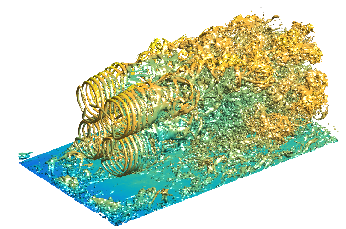
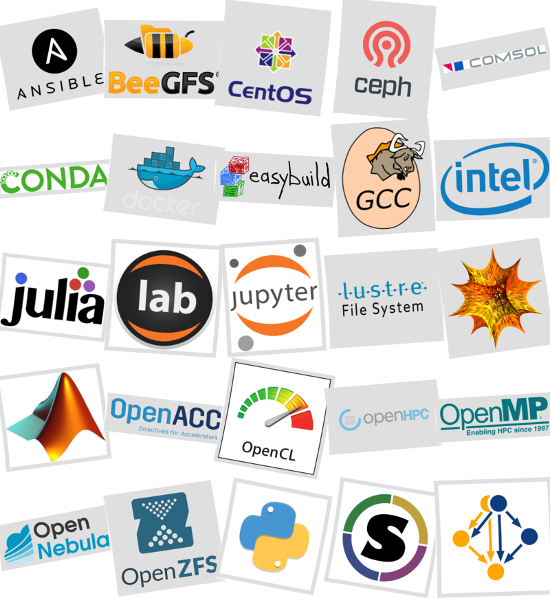

Hvem er vi ?
Research IT
High Performance Computing team
| Lars | + |
|---|---|
| Frank | |
| Martin |
Hvad gør vi ?
| HPC Opgaver | |
|---|---|
| Administrerer og vedligeholder hardware og software | |
| Designer, anskaffer og idriftsætter | |
| Automatiserer, optimerer og koder infrastruktur | |
| Organiserer og dokumenterer | |
| Opdrager, uddanner og supporterer brugerne | |
| Ajourfører os med ny HPC relevant hardware og software |

Regneklynger
- Gorm, 80 noder, 900 kerner, QLogic QDR Infiniband
- Jess, 320 nodes, 6400 kerner, QLogic QDR Infiniband
Storageklynger
| Mimer I | lustre | ~ 0.5 PB |
| Mimer II | lustre | ~ 1.5 PB |
| Tape | TSM | ~ 3 PB |
Brugergrupper
- https://www.vindenergi.dtu.dk/
- https://www.mek.dtu.dk
- https://www.elektro.dtu.dk/
- https://www.nutech.dtu.dk
- https://www.space.dtu.dk
- https://www.oilgas.dtu.dk
- https://www.fysik.dtu.dk
- med flere
Stats
- ca 400 brugere
- ca 40 daglige unikke logins
som anvender os til:
Anvendelse af Jess 1
- rotor interaktion (Ellipsys CFD / turbulens), Wind Energ. Sci., 4, 251-271, 2019

Anvendelse af Jess 2
Anvendelse af Jess 3
Sophia
er en supercomputer ?
Super versus normal computer
| Type | Tek | |
|---|---|---|
| + | CPUer | High-end dual-socket multi-core CPUer |
| GPUer | Graphics Processing Unit PCI kort, micro CPUer | |
| Netværk | 100/10 Gpbs ethernet | |
| + | Fabric | 400/200/100 Gbps interconnect, bidirektionel |
| FPGAer | Field Programmable Gate Arrays accelerator kort | |
| + | Software | Distribueret og parallel computing |
| + | Storage | Delt, parallelt og skalerbart |
High-performance computering HPC
- 1 job på N noder
- samtidige og afhængige = parallel
- stor båndbredde
- kort ventetid (latency)
Hyper-scaling computing HSC
- N job på hver 1 node
- samtidige og uafhængige = concurrent
High-performance storage system HPSS
- ultra-hurtig
- høj kapacitet
Beregningstyper
- Compute begrænset -> Intel, snart AMD
- vektorisering, SIMD
- CPU instruktioner, SSEx,AVXx,FMAx
- Memory begrænset -> AMD, snart Intel
- bw/lat kerne lokal hukommelse, cache hierakier L1,L2,L3
- bw/lat til hoved hukommelse (RAM)
- I/O begrænset
- disk
- netværk
Sophia udbud
EU udbud
- lang og rigid process, omfattende
- udbudsmaterial
- evaluering
- kravsspecifikationer
- HPC, memory + I/O netværk
- Fabric, interconnect + storage
- masse af ventetid
- udbudsstandstill
- leverance problemer
- miniudbud på storage
- udbud på container
Bang for the buck
“Bang” af tilbud udregnes som en vægtet sum:
\[E^{\tau,\alpha}=\sum_{\beta=1,2,3,4}W_{\beta}Q_{\beta,}^{\tau,\alpha},\]
som tilbudsgiver skal forsøge at maximere.
\[Q_{\beta}^{\tau,\alpha}=\dfrac{{\displaystyle \sum_{\gamma}}w_{\beta,\gamma}A_{\gamma}^{\tau,\alpha}}{{\displaystyle \sum_{\tau,\alpha,\gamma}}w_{\beta,\gamma}A_{\gamma}^{\tau,\alpha}}\ \mathrm{for}\ \beta= 1,2,3\]
\[Q_{4}^{\tau,\alpha}=\left(\dfrac{N^{\tau,\alpha}}{N^{0}}\right)\sum_{\gamma}w_{4,\gamma}\dfrac{T_{\gamma}^{\tau,\alpha}}{T_{\gamma}^{0}}\]
.. and the Oscar goes to ..
ATEA / DELL
Sophia klyngen = meget speciel !!
- 524 Dell R7425 dual socket
- AMD EPYC 7351 / 16 kerner noder (1 Gen server siden 2012)
- 1 x 100 Gbps Infiniband Mellanox
- 2 x 10 Gbps ethernet
- 16748 kerner
- 2 login noder med 256 GB RAM og 2xP4000 NVIDIA GPUer
- 490 compute noder med 128 GB RAM / 1 TB HDD
- 32 compute noder med 256 GB RAM / 1 TB HDD
AMD EPYC CPU og HPCCCCCX
- Zen microarkitektur
- MCM (multi-chip-module)
- SoC (system-on-chip), north/south, USB, SATA …
- Chiplets, core complexes, zeppeliner die
- Infinity fabric, inter core / socket connect
- non-uniform memory access
high performance computing cluster of clusters of core complexes
Netværk
- 15 x Dell Networking S3048, 48 x 1 Gbps + 4 x 10 Gbps
- 15 x Dell Networking S4048-ON, 48 x 10 Gbps + 6 x 40 Gbps
Infiniband Fabric / Node interconnect
- 2 x Mellanox S7890, managed 100G EDR
- 47 x Mellanox S7800, unmanaged 100G EDR

Fat tree topologi

- 100 Gbps Mellanox Infiniband, 25 Tbps mellem række 1 og 2
- 100 Mbps Internet til 250000 husstande
- kopier en 3 TB disk med et finger knips
Storage og fil systemer
- ceph, distribueret, robust, self-healing filsystem, multifunktions, 1+ PB
- beegfs/beeond parallelt og ultra-hurtigt SSD og HDD
Cluster framework
Open source software stack

Take away
Sophia er :
- 2 lokationer, serverrum og serverplads
- ~ 1000 fysiske HP og Dell noder
- ~ 24000 kerner
- ~ 70 Intel og Mellanox Infiniband switche
- ~ 3 fat trees
- ~ 50 HP og Dell 1G og 10G ethernet switche
- er den første EPYC klynge i Europa
- en unik supercomputer i danske HPC landskab
- den stærkeste CFD supercomputer i DK
- største sammenhængende 1:1 nonblocking IB 100 Gbps fat tree
- ceph + burstbuffer storage
- 70 TB RAM
- 522 TB HDD